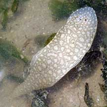
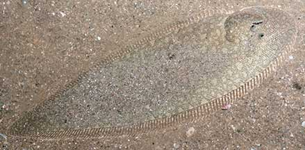
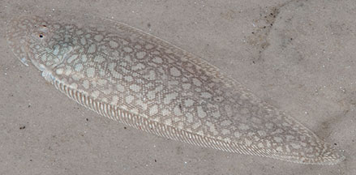
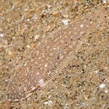
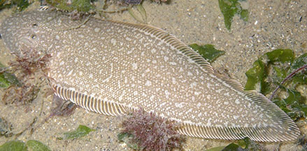
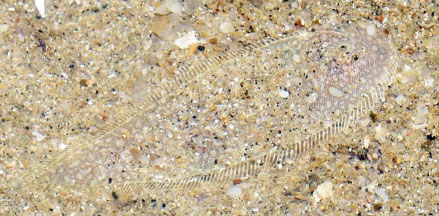
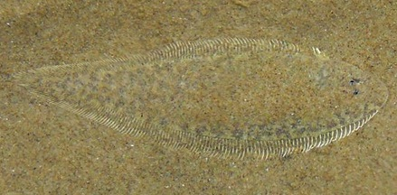
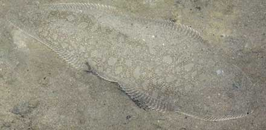

|
|
| fishes text index | photo index |
| Phylum Chordata > Subphylum Vertebrate > fishes > Order Pleuronectiformes |
| Tongue-soles Family Cynoglossidae updated Sep 2020
Where seen? These tiny flatfishes are sometimes seen on our Northern shores, among seagrasses, buried in sand or hovering over the surface. What are tongue-soles? Tongue-soles are flatfishes belonging to the Family Cynoglossidae. According to FishBase: the family has 3 genera and 110 species. They are found in all warm oceans, most species in shallow waters or near river mouths. One group (Symphurinae) are found in very deep waters 1,000m or more. In Greek, 'kyon' means 'dog' and 'glossa' means 'tongue'. Features: To about 18cm, those seen about 3-6cm. Both eyes on the left side, usually very small and close together. Body flat and oval, tapering at the tail, like an elongated tear-drop shape. The tail fin is joined and merges seamlessly with the dorsal and anal fins. There are no spines in all the fins. The dorsal fin starts at or infront of the eyes. It lacks pectoral fins. The teeth are tiny and usually only on the blind side. The eyed side usually has an even pattern of pale spots and matches the colour of its surroundings. Patterns may vary even within the same species. And patterns are often obscured by a layer of sand. Species are difficult to positively identify in the field or from photographs without closer examination of small features on the body. Sometimes confused with other flatfishes. Here's more on how to tell apart the flatfish families commonly seen. Tiny, flat and fast, they are also sometimes mistaken for flatworms. |
 A tiny one. Changi, Oct 08 |
 Changi, Jun 05 |
 Seringat-Kias, Feb 11 |
| What do they eat? Like other flatfishes, they are ambush predators. Lying in wait for prey, just beneath the sediment or
sand, with only the eyes sticking out. Human uses: Many large tongue-sole species are commercially important as food. Elsewhere, some species can reach 40cm long. |
| Tongue-soles on Singapore shores |
On wildsingapore
flickr
|
| Other sightings on Singapore shores |
|
|
 Changi CP7, Jan 21 Photo shared by Marcus Ng on facebook. |
 Changi, Apr 09 Photo shared by Loh Kok Sheng on flickr. |
|
|
 East Coast, Aug 18 Photo shared by Loh Kok Sheng on facebook. |
||
 East Coast, Dec 08 Photo shared by Loh Kok Sheng on his blog. |
East Coast, Aug 18 Photo shared by Loh Kok Sheng on facebook. |
||
 Tanah Merah, Jan 10 Photo shared by James Koh on flickr. |
| Family
Cynoglossidae recorded for Singapore from Wee Y.C. and Peter K. L. Ng. 1994. A First Look at Biodiversity in Singapore. ^from WORMS
|